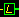

The object browser is a tool for accessing and navigating databases of L-studio objects. An object database is stored in an object oriented file system, or oofs. (This system is object oriented because it uses a prototype-extension paradigm; if an object is a refinement (extension) of another (the prototype), then the extension is stored in a subdirectory of the prototype.) This section discusses:
The object browser can open an object database stored on a local file system, or on a remote filesystem via a remote access (RA) server. An RA server can be used to access a centrally-stored object databse from many locations; this is useful if several people are collaborating on one model. See here for more information on RA servers.
To open the object browser on a local file system, select Open local from the Browser submenu of the Tools menu. This opens the "Open local browser" dialog:
Type in the full path or use the Browse button to select the root directory of your L-studio oofs.
To open the object browser on a remote filesystem via an RA server, select Open remote from the Browser submenu of the Tools menu. This will open the "Open remote browser" dialog:
The following information is required to open a browser on an RA server:
After the object browser has successfully connected to the RA server or local filesystem, the browser window may look like this (where oofs is the root folder name):
The oofs is a hierarchical structure of objects and non-object directories, called folders. Objects can contain other objects, according to the prototype-extension paradigm; however, objects can also be contained in folders. Folders are used to arrange objects which are related, but are not extensions of a single prototype object.
To select a folder or object, click on the name with the left mouse button. You can also use the arrow keys to navigate the object tree: the left arrow selects the parent object or folder, the right arrow selects the first object or folder of the next level (if the next level is displayed), the down arrow selects the next object or folder at the same level, and the up arrow selects the previous object or folder at the same level. If you press a letter or number key, the first name at the current level starting with the given character is selected.
To display the next level of the hierarchy, select an object or folder and either
To display all remaining levels of a folder or object, select its name and
Note: objects that are links (denoted by the link icon ) are not automatically expanded.
After expanding some objects the browser window may look like this:
The objects can have icons associated with them. To display the icon associated with an object, select it by left-clicking its name, then
Folders and objects with no icons will display a default icon with a large question mark:
The figure below shows the browser with some objects displaying their icons.
To show all the icons associated with a given object and its currently-displayed extensions, select the object and
To hide an icon associated with an object, select the object and:
To hide all icons in the hierarchy, select a name and:
You can make icons for your own objects. An icon is an image named icon, stored in SGI RGB format, in the object directory. L-studio has a tool which lets you create an icon from a screenshot. Select the Snap icon command from the Tools menu. This will create a red frame which can be dragged around the screen. Place it over the image (perhaps a cpfg simulation) which you want to use as your icon, then right-click on the frame and choose Snap now from the popup menu. This will create the icon file on the lab table. Close the frame by selecting Snap icon from the Tools menu again.
To open an object in L-studio from the browser:
If the object being opened is accessed using the RA server it is assumed that the text files are stored using the Unix convention: every line is terminated with a single line-feed character. When transferring the text files from the server to the local machine these files are converted by adding a carriage-return character before every line-feed character to follow the Windows text file convention. For more information about specifying which files are text files, read Configuring the browser.
Once you have opened several objects in L-studio, it may be difficult to find immediately where in the browser hierarchy any one of them is situated. You can select the command Position in the browser from L-studio's Object menu to select and show the object in the browser.
When you save an object that you opened with the browser, you can use Save and Save as, as with any object. However, the command Make extension is also available from the Object menu. This command will save the modified object as an extension of the original object. For more information on this command, see Saving objects.
To delete an object or folder, select Delete from the Object menu. You will be prompted to confirm this command. If the selected object or folder has extensions then the extensions will be deleted as well.
To rename an object or folder, select Rename from the Object menu.
To copy an object to a different location, select the object and then choose Copy object from the Object menu. If you want to copy the object or folder and all of its extensions, choose Copy subtree from the Object menu.
To paste the copied object(s) and/or folder(s) into the new location, select the new parent object, then choose Paste object(s) from the Object menu. This copy/paste function can be used to copy objects between two browsers. This is useful if you want to transfer an object (or a set of objects) from one location to another (for example, from a local disk to an RA server).